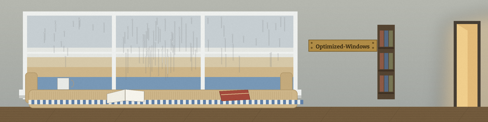

This page collects links and judgements. It installs nothing. The repository is a pointer list, not a script: nothing here applies a tweak or changes a Windows system.

One recommendation is worth following outward: AtlasOS, a Windows modification project offered for a leaner system, described here only as far as this repository describes it. The reader is being sent to its own home to continue.
AtlasOS, at atlasos.netThe list's second link, medicatusb.com, is kept as a warning, not a recommendation. The author verdict, stated plainly: he does not trust it, found out that the project uses pirated software, considers that a security risk he is unwilling to take, and purged the software from his machine.
Following a pointer and running a tool are different acts. This page performs the first only. Treat any Windows optimization tool as a change to your own system and check what it does before running it.
A pointer list is an opinion with links attached. Readers should inspect any modification at its own home before adopting it, and weigh it against their own machine and their own tolerance for risk.